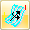
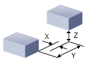
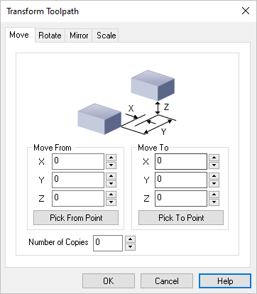
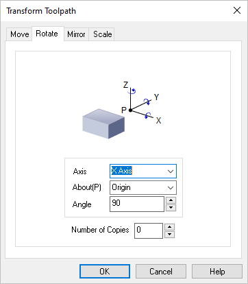
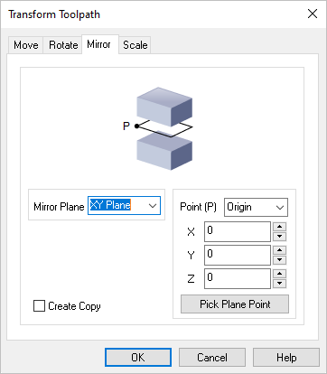
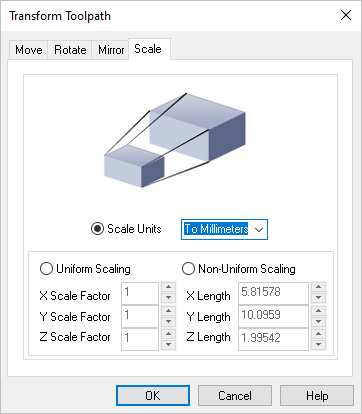

Available in:
|
Xpress
|
Standard
|
Expert
|
Professional

|
Premium
|


Transform Toolpath, Toolpath Editor
Transform allows you to Move, Rotate, Scale and Edit Toolpath.
The Move tab of the Transform Toolpath dialog allows you to translate the toolpath by specifying From and To points for the move. You can either specify these points by coordinate entry in the corresponding edit fields or could graphically pick the points by selecting the Pick buttons. Once the points are specified, selecting the apply button will perform the move operation.
 Dialog Box: Transform Toolpath, Move tab Move From
Enter the X,Y,Z coordinate values for the Move From point or select the Pick From Part button to select a point from the model.
Move To
Enter the X,Y,Z coordinate values for the Move To point or select the Pick To Part button to select a point from the model.
Number of Copies
You can also Copy the toolpath by entering the number of copies.
|
|
Selecting the Rotate tab allows you to rotate the toolpath.
 Dialog Box: Transform Toolpath, Rotate tab Axis / About(P) / Angle
Rotation can be performed around any of the three principal axes. The angle of rotation as well as the point and Axis of rotation can be specified.
The point of rotation could be one of the Origin, Center of the part, Minimum point of the part and the Maximum point of the part.
The Axis of rotation could be the X, Y or the Z Axis. You can specify any arbitrary rotation Angle.
Number of Copies
You can also Copy the toolpath by entering the number of copies.
|
|
Selecting the Mirror tab allows you to Mirror the selected toolpath.
 Dialog Box: Transform Toolpath, Mirror tab Mirror Plane
Select the Mirror Plane from the list (XY Plane, XZ Plane or YZ Plane).
Point (P)
Select a Mirror Point (P) from the list (Origin, Center of the part, Minimum point of the part) or enter the X,Y,Z coordinate values of the desired point.
You can also select the Pick Plane Point button to select a point from the model.
Create Copy
Check this box to create a Copy of the mirrored toolpath.
|
|
Selecting the Scale tab allows you to scale the selected toolpath. All scaling is performed about the zero of the coordinate axes. You can optionally scale from a mm to an inch or vice-versa or by specifying a scale factor. You can also scale the selections uniformly or perform non-uniform scaling in each of the three principal axes.
 Dialog Box: Transform Toolpath, Scale tab Scale Units
Select the Scale Units from the list (To Millimeters or To Inches).
Uniform Scaling
Select this option and then enter the uniform X,Y and Z scale factors.
Non-Uniform Scaling
Select this option and then enter the actual non-uniform X,Y and Z length values.
|
|